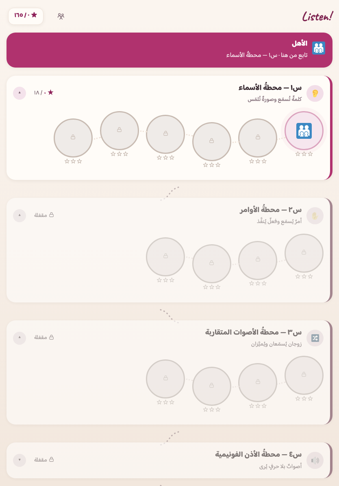

١ · افتح التطبيق
اضغط «ابدأ الآن» لتكون داخل التطبيق. وعلى الآيباد والآيفون افتحه في سفاري — التثبيت لا يعمل من متصفّحٍ آخر عليهما.
«اِسْمَعْ» تطبيق ويب مجاني لطفلٍ عربيٍّ في السادسة، يبني الإنكليزية كما تُبنى لغةٌ ثانية لا كما تُبنى لغةُ الأمّ: مسارٌ للسمع (كلماتٌ وأوامرُ وأصواتٌ تُميَّز بالأذن)، ومسارٌ للحرف يمشي معه ولا يسبقه. ولا يُعرَض على الطفل مكتوبٌ لم يتقنه سمعاً — وهذا قيدٌ في الشيفرة يحرسه برنامجُ فحصٍ لا وعدٌ في صفحة.
ابدأ الآن ←يفتح في المتصفّح مباشرة — بلا متجرٍ، وبلا حساب، وبلا إعلانات. وبعد أول فتحةٍ متّصلة يعمل دون إنترنت.

«اِسْمَعْ» يُضاف إلى شاشة الجهاز بنقرتين — بلا متجر تطبيقات وبلا تنزيل. وهذه ليست خطوةً تجميلية: تقدّم طفلك محفوظ في جهازه هو، لا في حسابٍ عندنا ولا على خادم. وبالتثبيت يفتح بأيقونته بلا شريط متصفّح يشتّته، ويحفظ الأصواتَ في الجهاز فيعمل في السيارة وفي صفٍّ بلا شبكة.
والتطبيق نفسُه يُرشدك: حين يُفتح من متصفّحٍ يظهر أعلاه شريطُ تثبيتٍ يعرف جهازَك — زرُّ «ثبّت الآن» بنقرةٍ واحدة حيث يتيحها النظام، وخطوتا سفاري على الآيباد والآيفون. والخطواتُ الأربع الآتية هي نفسُها إن أحببتَ فعلَها بيدك.
اضغط «ابدأ الآن» لتكون داخل التطبيق. وعلى الآيباد والآيفون افتحه في سفاري — التثبيت لا يعمل من متصفّحٍ آخر عليهما.
اضغط زرّ المشاركة في شريط سفاري — مربّعٌ يخرج منه سهمٌ إلى أعلى.
اختر «إضافة إلى الشاشة الرئيسية» ثم «إضافة».
تظهر أيقونة Listen! بين تطبيقات الجهاز. افتحه منها مرّةً وهو متّصل بالإنترنت ودعه دقائق ليحفظ الأصوات، ثم يعمل بلا شبكة.
خطواتُ أندرويد والحاسوب، وكيف تتأكّد أنّ الأصوات اكتملت — في صفحة الأهل.
فمِن لوحة وليّ الأمر — لا من شاشة الطفل — بابان اختياريان يفتحهما المعلّم أو الوالد متى شاء، ويغلقهما متى شاء. ومُغلَقين لا يتغيّر في التطبيق حرف: الرحلةُ هي هي، وقياسُ ما أتقنه هو هو.
طفلٌ يأتيك من مدرسةٍ أو مركزٍ وقد سمع الإنكليزية وعرف بعضَ كلماتها لا يُحبَس في أوّل محطة: يمتحنه وليُّ أمره من اللوحة درجةً درجة بتمارين المراجعة نفسِها، فيقف عند أوّل تعثّرٍ وتبدأ رحلتُه من هناك. ويفتح ما أُثبت لا ما ادُّعي: العتبةُ عتبةُ بوّابات الإتقان نفسُها (٨٠٪)، ولكلِّ محطةٍ فيما يُفتَح سؤالٌ مضمون — فلا تُفتح محطةٌ لم يُسأل عنها، والبواباتُ الثلاث لا تُقفز. وكلُّ محاولةٍ تدخل صناديقَ المراجعة قياساً حقيقياً بلا وسمٍ خاصّ، وما فُتح لا يُغلق أبداً. وعندنا قيدٌ سادس لا نظيرَ له: مسارانا مقترنان، فلا يفتح الامتحانُ حرفاً لكلمةٍ لم تثبت في أذنه ولو اجتاز درجتَها — يقف السلّمُ هناك ويقول لك لماذا.
لطفلٍ يحتاج وتيرةً أبطأ (صعوبةُ تعلّمٍ أو تشتّتُ انتباه): ٤ مقابضَ في اللوحة يُشغِّل منها ما شاء ويُطفئ ما شاء — «نموذجٌ أبطأ» و«جرعةٌ أقصر» و«هدوءٌ حسّي» و«حوضٌ أضيق». و«نموذجٌ أبطأ» مقبضُنا وحدَنا وأنفعُها هنا: في لغةٍ ثانية يكون المسموعُ الإنكليزيّ نموذجَ المعلّم لا زينةَ سؤال، فيُبطَّأ الملفُّ نفسُه بنبرته (لا صوتَ آليّ ولا توليدَ جديد) ويبقى التوجيهُ العربيّ على سرعته. ولا يُحتسب ما أُعين عليه إتقاناً، وما يمسّ القياسَ من هذه المقابض يُعطَّل داخل البوابات وامتحان اللحاق — مسطرةٌ واحدة للجميع. ويعرفه المعلّم بنظرة: خطٌّ تحت شارة الشريط ما دام مشتغلاً — بلا كلمةٍ تَسِمُ الطفل.
وحدُّهما مكتوبٌ لا مسكوتٌ عنه — وهو هنا بنصّه في لوحة وليّ الأمر حرفاً بحرف: وضعُ الدعم يعاير إيقاعَ التطبيق: نموذجُ الصوت الإنكليزيّ أبطأ، وجرعةٌ أقصر، وحوضُ اختيارٍ أضيق، وحركةٌ أهدأ. وهو لا يشخّص ولا يعالج ولا يحكم على طفلك ولا على نطقه، ولا يَعِد بقدرِ أثرٍ في التعلّم، ولا يخدم الكفيفَ ولا الأصمَّ المُشير ولا غيرَ الناطق — فالتطبيق يعتمد على العين والأذن معاً. والمادّةُ لا تتغيّر بحرف: المحطاتُ نفسُها والكلماتُ نفسُها والأسئلةُ نفسُها، والإيقاعُ وحدَه هو الذي يتّسع. ولا نَعِد بحجم أثر: لم يُقَس أثرُ ما نصنعه بعد، وهو اليوم في تجربةٍ ميدانية. والتفصيل في الدليل العملي.
الكلمةُ تُبنى في أذنه أولاً بالصورة والصوت، ولا تدخل شاشةَ الفكّ حتى تثبت في مراجعته السمعية. هذا هو قيدُ الاقتران، وهو مكتوبٌ في الشيفرة: تمرينُ قراءةٍ يولّد كلمةً غيرَ ناضجةٍ سمعاً يُفشِل الفحص.
التعليماتُ والتشجيعُ بالعربية بصوتٍ يعرفه — فلا يضيع الطفلُ في فهم المطلوب، ولا يرتفع حاجزُ القلق. والكلمةُ المدروسة تُنطق بلسانها دائماً بلكنةٍ أمريكية، ولا تُعرَّب أبداً.
جمهورُنا قبل-قارئ بلغتين: عربيةً بحكم عمره، وإنكليزيةً بحكم البداية. فكلُّ زرٍّ صورةٌ دالّة أو أيقونة، وكلُّ تعليمةٍ مسموعة — ولا فعلَ في التطبيق وسيلتُه الوحيدة قراءة.
لا عدّادَ وقتٍ في التطبيق كلِّه ولا شاشةَ «خطأ». والخطأ يُري الطفلَ ما اختاره ومعه الصواب ثم تمضي الجولة — والكلمةُ تعود غداً في مراجعته لا في عقوبةٍ الآن.
تطبيقٌ لطفلٍ عربيٍّ في السادسة ± سنة، خرّيجِ «اِقْرَأْ» أو في أثنائه — يبدأ من الصفر في الإنكليزية. ورحلتُه تنتهي عند رصيدٍ سمعيٍّ مختارٍ من Cambridge English: Starters — ١٥٠ كلمةً في حقولها، مصوَّرةً صادقةً كلَّها — والمرحلةِ الخامسة من سلّم Letters and Sounds فكّاً. والرصيدُ المُعلَن سقفُ فاحصٍ لا هدفُ تأسيسٍ أوّل: قائمةُ Starters كلُّها ٤٩٥ مدخلاً، وتمامُها بابُ المستوى الثاني لا بابُ هذه الرحلة. وما بعد ذلك أفقٌ لا وعد.
يفهم الإنكليزيةَ المسموعة ويستجيب لها: أسماءٌ تُلمَس صورُها، وأوامرُ تُنفَّذ بالجسد، وأصواتٌ متقاربة تُميَّز، وأذنٌ فونيمية تدمج وتقطّع — قبل الحرف بكامله.
يفكّ المكتوبَ بسلّمٍ شبه مفكوك: رسمٌ واحد لكل صوت أولاً، ثم الدمجُ، ثم العناقيد، ثم البدائل — وقصصٌ لا تُكتب فيها كلمةٌ لم تُدرَّس، إلا شائكاتٍ معدودة.
تفصل المراحلَ بوابةُ إتقان: عبورُ الأذن، ثم عبورُ الفكّ، ثم ختامُ التأسيس. ولا رسوبَ فيها — دون العتبة إعادةٌ بتمارين جديدة بلا حدٍّ ولا لفظِ فشل.

الرحلةُ كلُّها: ماذا يتعلّم في كل محطة، وكيف يعمل تمرينُها، وأين تقع بواباتُها الثلاث.
اثنا عشر قراراً منهجياً معلَناً بأسبابه ومصادره، ومعها حدودُ ما نَعِد به وما لا نَعِد.
كيف تثبّته، وكم دقيقةً في اليوم، ودورُك أنت أثناء اللعب، وكيف تقرأ لوحتَك، وماذا تفعل إن تعثّر.
لا حساب، ولا تسجيل دخول، ولا خادمَ يخزّن شيئاً، ولا إعلانات، ولا تتبُّع. تقدّمُ طفلك في ذاكرة جهازك وحدَه، ومنه تحفظ نسخةً احتياطية بملفٍّ تملكه أنت. ولا يسجّل التطبيقُ صوتَ طفلك أبداً — لا شيفرةَ فيه تفتح ميكروفوناً أصلاً: الترديدُ يُدعى ولا يُقاس.